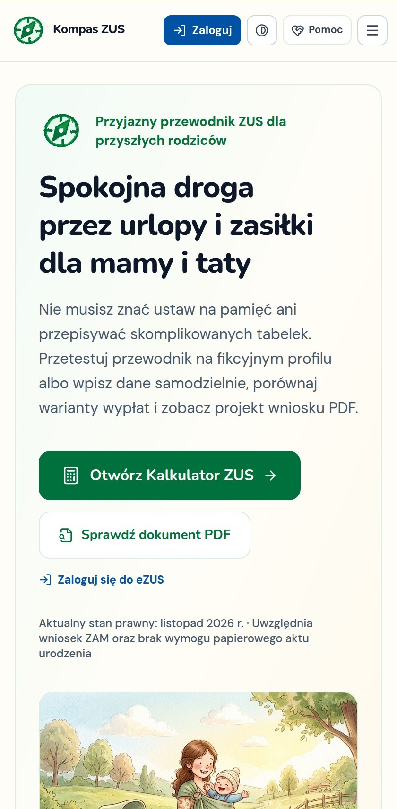

Czy mam prawo?
Forma zatrudnienia, ubezpieczenie i terminy zmieniają odpowiedź.
Informacja o świadczeniach i urlopach, która pomaga rodzicom przejść od pytania do kolejnego kroku.

Kalkulator porównuje wypłatę i plan opieki w indywidualnej sytuacji rodziny.


Audytor odczytuje pola i porównuje je z regułami, które stoją za kalkulatorem.
Rodzic może obejrzeć przykładowe konto, historię e-ZLA i dalsze działania bez podawania danych do logowania.

